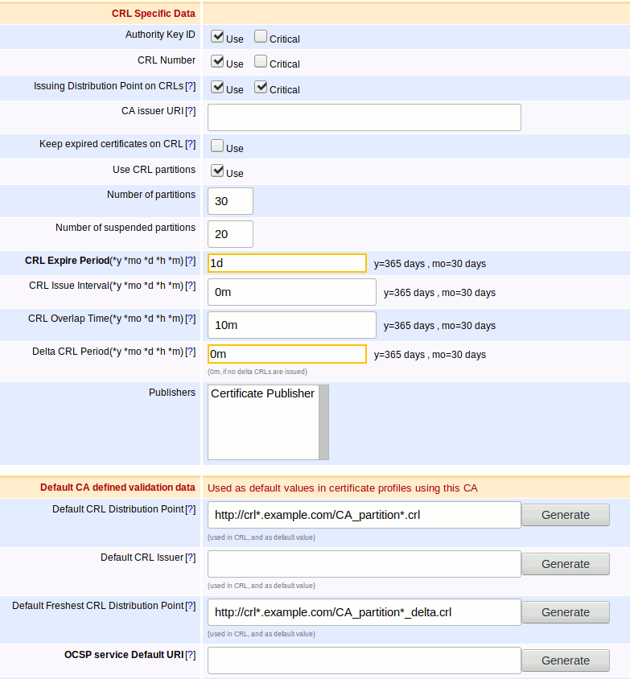
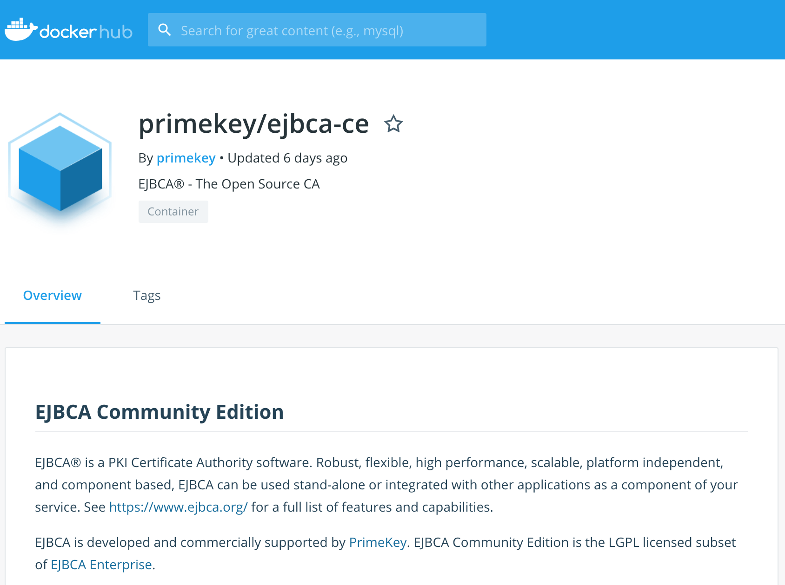

EJBCA 7.1 Release Notes
Spring has finally arrived in Stockholm, following the traditional seasons of Winter, False Spring, Second Winter, the Spring of Deceit and the final cold snap of I-Just-Changed-My-Tires. The melting snows bring with them many gifts, besides the beer forgotten on the balcony last November, among them EJBCA 7.1
Partitioned CRLs
Long and enduringly requested, EJBCA 7.1 is now capable of producing partitioned CRLs. Activated under the CA configuration, the number of partitions per CRL is dynamically configurable, allowing new partitions to be added as the CRL grows, and assignment to older partitions to be suspended in order to allow for future growth. CDP partition assignment is random in order to allow for even distribution of certificates, and partition definition can be looked up in the CDP extension as defined in RFC5280.

For those of you not wishing to use partitioned CRLs life will mostly move on as usual while for those of you applying partitioned CRLs to existing installations you will retain a legacy CRL for pre-existing certificates (as the CDP can't be changed retroactively) while newly issued certificates will be issued to partitions.
Deprecation and Removal of Hard Token Support
In an effort to relieve ourselves of maintaining little-used features we have chosen in this release to deprecate and remove support of hard tokens, after analyzing that it has little to no use among PrimeKey customers. Naturally this will have no impact on existing installations, but we have provided scripts for those of you wishing to remove the relevant tables from the database. See the upgrade notes for more details.
VA and RA Specific Distributions
As a response to market interest, we've enhanced our build process and modularization in order to produce VA and RA specific builds of EJBCA, each capable of acting in their specific roles but not as a CA. This allows PrimeKey to offer a more dynamic model for Appliance and Cloud users who would like to add RA and VA instances to their PKIs but find it prohibitive to pay for the full fee for the complete distribution. The standard CA distribution still retains the full VA and RA capabilities as before. If you're interested in finding out more, please contact sales@primekey.com
EJBCA 6.15.2 CE Available on Docker Hub
As some of you already know, as part of our ongoing containerization project we've added a docker container to Docker Hub, built on a sneak-peek of the coming release of EJBCA 6.15.2 Community Edition.

If you're interested in moving your PKI towards containerization, please go ahead and have a look, and feel free to give us any feedback!
Upgrade Information
Read the EJBCA 7.1 Upgrade Notes for important information about this release. For upgrade instructions and information on upgrade paths, see Upgrading EJBCA.
Change Log: Resolved Issues
For full details of fixed bugs and implemented features in EJBCA 7.1.0, refer to our JIRA Issue Tracker.
Issues Resolved in 7.1.0
Released on the 29th of April 2019
New Features
ECA-961 - Partitioning of large CRLs by number of issued certificates
ECA-7384 - Protocol (WS/CMP/REST/CLI) support for issuing with multi-value RDNs
ECA-7474 - GUI support to enable/disable multi-value RDNs in End Entity Profiles
ECA-7785 - New validator phase that will run before using the CA private key to sign the tbsCertificate
ECA-7815 - Selenium tests for Domain Blacklist Validator
ECA-7906 - Remove CA related UI parts from RA/UI builds.
ECA-7907 - Rendering conditions for "Certificate Authority" page on different builds
ECA-7909 - Hide unusable commands from EJBCA CLI (ejbca.sh)
ECA-7910 - Create separate module for X509CA
ECA-7911 - Split X509 CA into common and build specific parts
ECA-7912 - Create new ant target for RA/VA ziprelease
ECA-7921 - Configdump support for Domain Blacklist Validator
ECA-7934 - Add CRL partition index column in certificate tables
ECA-7935 - Add crlPartitionIndex column in CRLData
ECA-7936 - Add partition configuration in X509CAInfo
ECA-7937 - User interface for configuration of CA CRL partitioning
ECA-7938 - Add documentation for partitioned CRL configuration
ECA-7939 - Update X509CA.generateCRL function to handle partitioned CRLs
ECA-7940 - Assign certificates to CRL partitions upon issuance or import
ECA-7941 - Show available CRL URLs if partitioning is used, in Edit CA page
ECA-7942 - Method generating partitioned CRL CDP URLs
ECA-7945 - Perform regression testing for certificate issuance with and without CRL partitioning
ECA-7946 - Add extensive system test of CRL partitioning
ECA-7953 - Allow for the export of single CP/EEPs
ECA-7962 - Make "ca republish" CLI command work with partitioned CRL
ECA-7963 - Update CRL Download Service to handle Partitioned CRLs
ECA-7964 - Create a separate module for CVC CA
ECA-7966 - RA-API, WS and REST support for Partitioned CRLs
ECA-8030 - Add YubiHSM2 P11 library to known P11 libraries
ECA-8048 - Add support for Partitioned CRLs in CertDistServlet, GetCRLServlet and CRLStoreServlet
ECA-8052 - Partitioned CRLs should not be allowed without "Issuing Distribution Point" CRL extension
Tasks
ECA-7385 - Document multi value RDN behavior for 'Subset of Subject DN' (not working with multi-value)
ECA-7389 - Document Administrator matching of multi-valued RDNs
ECA-7435 - Java 11: ClassNotFoundException: org.apache.geronimo.osgi.locator.ProviderLocator from WS Tests
ECA-7766 - Create a Jenkins job for testing Oracle DB
ECA-7825 - Java 11: ejbca-db-cli uses endorsed.dirs which is not supported in java 11
ECA-7857 - Create a Jenkins job for testing openJdk11
ECA-7892 - Make validationtool tests runnable
ECA-7904 - Investigate what to remove from Admin Web in RA/VA builds
ECA-7913 - Document changes RA / VA / CA builds.
ECA-7944 - Exploratory testing
ECA-7956 - Refactoring ExternalProcessTools.writeTemporaryFileToDisk for readability
ECA-7970 - Update changelog summary
ECA-7987 - Clarify documentation of fixed octet random serial number generator
ECA-7990 - Remove usage of SecureRandom from test cases to avoid copy-paste
ECA-8026 - Create Jenkins jobs for limited RA / VA builds
ECA-8027 - Fix remaining failures for Selenium tests in Jenkins
ECA-8034 - Upgrade testing of Partitioned CRL
ECA-8045 - Exemplify of the Required flag for custom certificate extensions
ECA-8050 - Add to CRL documentation - expired certs not included in new CRL
ECA-8058 - Fix EcaQa198 selenium test fail in Jenkins.
Improvements
ECA-7272 - Security verification
ECA-7391 - Only show CA-related approvals in CA Web (and vice versa)
ECA-7418 - Java 11: Xerces throws ClassNotFoundException: org.w3c.dom.ls.DocumentLS
ECA-7521 - User must fix malformed file when making cert request.
ECA-7554 - POC of Jenkins warnings job to analyze the code style/quality/shape
ECA-7593 - Add ClientToolBoxTest in new Jenkins
ECA-7596 - Unification and consolidation of dockers' shell scripts
ECA-7622 - Ability to edit token type in the RA Web
ECA-7722 - Minor usability improvements on Edit CA page
ECA-7797 - Upgrade JAX-RS 2.0 related libraries, correct swagger ACME generation and rely more on app server's JAX-RS implementation
ECA-7798 - Unit tests for the Configuration Checker
ECA-7853 - Change default digest alg of CMP request and response messages to SHA256
ECA-7884 - System test for copying DNSName from CN over WS
ECA-7902 - Add ExtentReport Plugin
ECA-7954 - Replace "Export profiles..."-links from profiles pages with buttons.
ECA-7957 - Improve error message when pinging an unknown peer system
ECA-7965 - Document CertTools.verify behavior for bad params with JUnit test
ECA-7975 - Avoid using two executors for Jenkins jobs
ECA-7986 - Better validation message when CAA validator is running on a certificate without dNSNames
ECA-7997 - Translate the RA web to Swedish
ECA-8000 - External Command Validator output not forwarded to EJBCAWS
ECA-8011 - Make crlPartitionIndex nullable instead of DEFAULT 0
ECA-8013 - Upgrade BC to 1.61
ECA-8016 - Database publishing of partitioned CRLs
ECA-8029 - Remove Hard Tokens, Hard Token Profiles and Hard Token Issuers from EJBCA
ECA-8097 - Selenium test for CA with incorrect Partitioned CRL settings
ECA-8101 - Upgrade notes for partitioned CRLs
ECA-8103 - CRL Update Worker should handle partitioned CRLs
ECA-8107 - Change terminology for "retired CRL partitions"
ECA-8109 - CRL partition fields in new CA page appear after changing Crypto Token
ECA-8110 - Document that CRL partition 0 gets URL without partition number
Bug Fixes
ECA-7626 - Fix out of memory issues on new Jenkins
ECA-7731 - Subject AltName does not appear in the RA Web when Subject DN is not used
ECA-7733 - Security Fix
ECA-7753 - Selenium Docker Jenkins followup ticket - NoInitialContextException: Need to specify class name in environment or system property
ECA-7841 - Regression: Missing JAXB in JDK11 and lack of bundled API JAR causes complication error for Acme classes
ECA-7868 - Regression: CA names in Edit End Entity Profile page should be sorted
ECA-7915 - Unexpected error while using Create Authenticated Certificate Signing Request in CA page
ECA-7929 - Fingerprints downloaded from the RA Web are scrambled
ECA-7952 - Some rules not applied when creating a role from the RA Web
ECA-7958 - New fields in X509CAInfo should be added to configdump
ECA-7973 - Clicking Test Command twice in External Command Certificate Validator gives exception
ECA-7974 - Community Edition build broken in trunk
ECA-7977 - CRL Downloader can't handle entries with extensions, but no reason code
ECA-7984 - Jenkins not cleaning up temporary fles
ECA-7985 - Unit tests do not respect tests.jvmargs
ECA-7989 - Possible race condition in SerialNumberGenerator with different CAs use different octet sizes
ECA-7991 - Make ApprovalSessionTest reliable
ECA-8002 - CRL Partition: CA does not retain CRL Partition settings
ECA-8004 - List of validators in certificate profiles is not sorted
ECA-8005 - NPE when trying to change ca token of a non existing CA
ECA-8010 - JBoss CLI on Jenkins uses too much memory on Jenkins
ECA-8012 - Regression: Delegated key pair generation doesn't work with RA-Gui enrollment
ECA-8014 - Trivial typo in revoke end entity reason codes
ECA-8015 - Exception in Admin UI trying to view a crypto token configured with a non-existing P11 library file
ECA-8018 - For Signed CMP messages, signed error message may not be signed with the expected signature for some errors
ECA-8023 - Update the default key aliases when importing keystores
ECA-8040 - Regression: End Entity Profiles ZIP file with directory cannot be imported
ECA-8042 - Cannot create CA with 'Use CRL partitions' option checked
ECA-8046 - Jenkins jobs use the same name for docker resources
ECA-8047 - Regression: Some End Entity Profiles ZIP files cannot be imported
ECA-8054 - Some classes still try to instantiate EjbcaWebBean
ECA-8055 - Log errors at initialization failure of EjbcaWebBeanImpl
ECA-8061 - Creating a CA using CRL Partition gives EntityExistsException
ECA-8062 - EST reenrollment fails if the DN includes more components than CN
ECA-8063 - ExtRAMessagesTest does not compile
ECA-8072 - CaRenewCACommandTest stops working after 2019-04-15
ECA-8075 - The "Generate" buttons do not include the "&partition=*" if using Partitioned CRLs in a new CA
ECA-8083 - Certification Authorities: Creating new CA with CRL Partitions fails
ECA-8085 - Fix potential race condition in REST initialization found by PMD
ECA-8087 - Unable to create CA with CRL Partitions
ECA-8090 - Certificate created with "use partitions" CA has 0 as crlPartitionindex
ECA-8095- Null pointer exception when a certificate profile uses CA defined AIA values, but the CA has defined none
ECA-8105- Regression: Cannot edit approval requests in RA-web
ECA-8111- SoftHSM directory has wrong owner on Jenkins